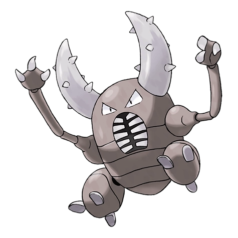

Назад
Пинсир

Пинсир — Покемон 1 поколения под номером 127 в Покедекс. Обитает он в регионе Канто и относится к Жучиному типу. Пинсир поразительно силён. Он может схватить рогами и легко поднять врага вдвое больше своего веса. В холодных местах движения этого Покемона становятся вялыми.
Тип:
Жук
Эволюция
# 127 Пинсир